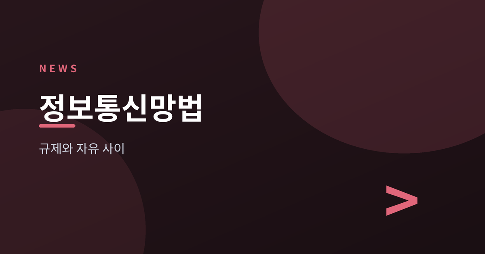
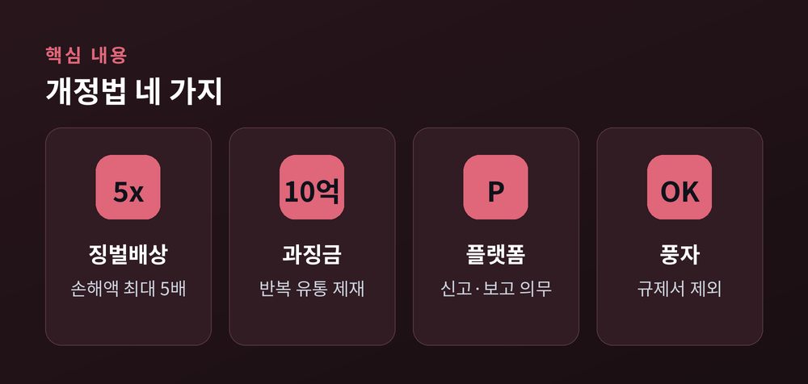
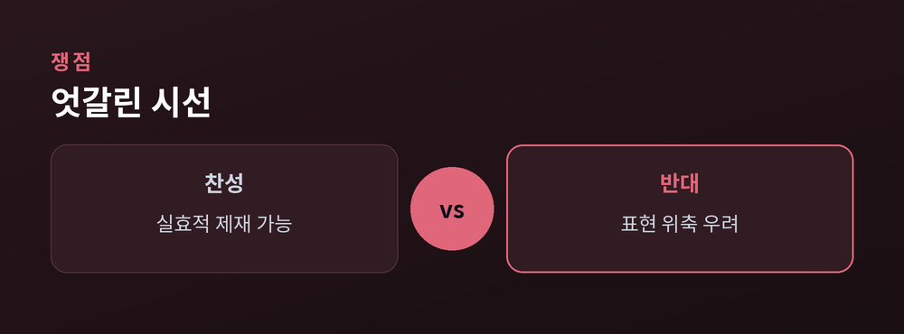
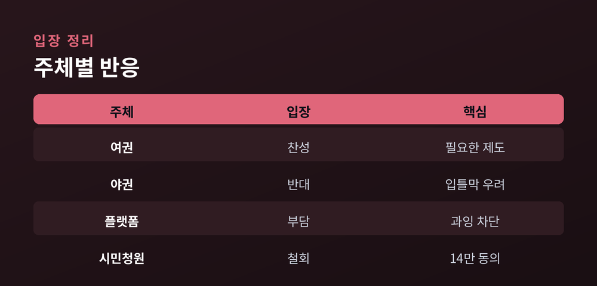
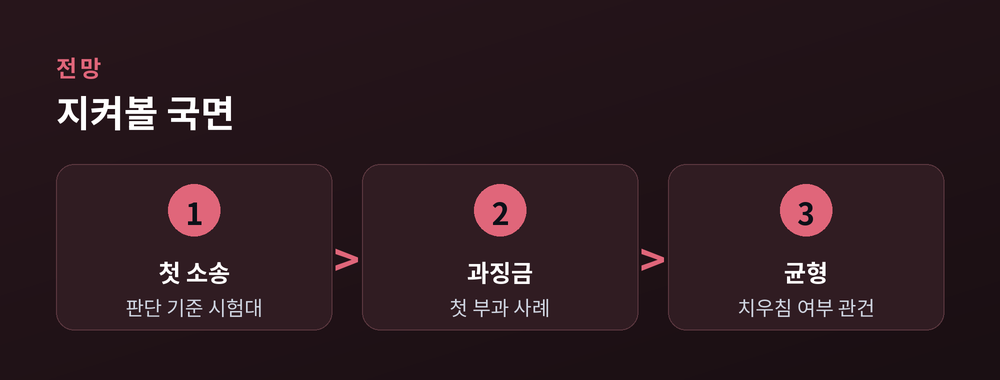

'허위조작정보 근절'과 '표현의 자유' 사이

지난 7월 7일, 개정 정보통신망법이 시행됐습니다. 이른바 '허위조작정보 근절법'입니다. 온라인 허위정보에 강한 제재를 물리는 법인데, 시행 전후로 찬반이 뜨겁게 갈렸습니다. 무슨 일이 있었고, 왜 논쟁적이며, 앞으로 무엇을 지켜봐야 하는지 균형 있게 정리해 보겠습니다.
한쪽은 "가짜뉴스를 막을 실효적 장치"라고 말합니다. 다른 쪽은 "비판을 막는 입틀막법"이라고 반박합니다. 같은 법을 두고 평가가 정반대입니다.
개정법은 '허위정보'와 '조작정보'를 합쳐 '허위조작정보'라는 개념을 새로 세웠습니다. 고의로 이를 퍼뜨려 피해를 주면 손해액의 최대 5배까지 징벌적 손해배상을 물릴 수 있습니다. 또 법원에서 위법이 확정된 정보를 2회 이상 반복 유통하면 최대 10억 원의 과징금이 부과됩니다.
일평균 이용자 100만 명 이상 대형 플랫폼(네이버, 카카오, 구글, 메타 등)에는 신고 접수 체계 마련과 반기별 투명성 보고서 공표 의무가 새로 생겼습니다. 다만 풍자와 패러디는 규제 대상에서 제외했습니다.

찬성 측은 명예훼손으로 돈을 버는 행위에 실질적 제재가 가능해졌다고 봅니다. 정보 확산의 통로인 대형 플랫폼에 책임을 지운 점도 긍정적으로 평가합니다.
반대 측은 판단 기준의 모호함을 지적합니다. '고의', '부당한 목적' 같은 주관적 요소가 표현의 자유와 충돌할 수 있다는 것입니다. 특히 비판 보도를 겨냥한 '전략적 봉쇄소송(SLAPP)' 우려가 큽니다. 패소 가능성이 크더라도 소송 부담만으로 보도를 위축시킬 수 있다는 지적입니다.

플랫폼이 법적 위험을 줄이려 AI 사전 필터링을 강화하면, 정당한 정책 비판까지 과잉 차단될 수 있다는 걱정도 나옵니다. 국회 국민동의청원에는 법 철회를 요구하는 서명에 두 달간 14만 명 이상이 동의했습니다.
정치권 반응도 갈립니다. 여권은 필요한 제도라는 입장이고, 야권은 '입틀막법'이라며 반발합니다. 미국 측도 표현의 자유 관련 우려를 표했습니다.

법은 이미 시행됐지만, 논쟁은 오히려 시작 단계입니다. 관건은 '허위조작정보'의 판단 기준이 실제 사건에서 얼마나 일관되게 적용되느냐입니다. 첫 소송과 과징금 사례가 나오면 해석의 방향이 잡힐 전망입니다.
표현의 자유와 정보의 신뢰, 둘 다 포기하기 어려운 가치입니다. 제도가 어느 쪽으로도 치우치지 않게 운영될 수 있을지가 앞으로의 과제로 남았습니다.

참고: VOA코리아, 헤럴드경제, 한국일보, 파이낸셜뉴스, 서울경제